السلسلة 42
السيارة (صنف B) · 40 سؤال بالصوت. حاول تجاوب بوحدك، من بعد شوف الجواب.
السؤال 1
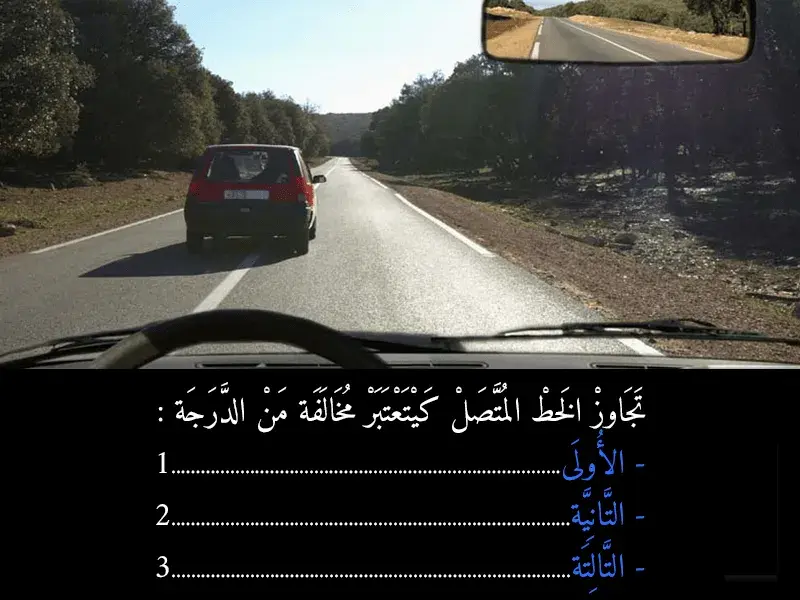
بيّن الجواب
الجواب الصحيح: 1
تجاوز الخط المتصل كيعتبر مخالفة من الدرجة الأولى. السائق اللي كيدير هاد المخالفة غيتفرض عليه غرامة قدرها 400 درهم إلا خلصها فظرف 24 ساعة، ولا 500 درهم إلا خلصها فظرف 15 يوم، ولا 700 درهم إلا خلصها فظرف 30 يوم. وكيتم خصم 4 نقاط من رصيد رخصة السياقة ديالو. الجواب الصحيح هو رقم 1.
السؤال 2
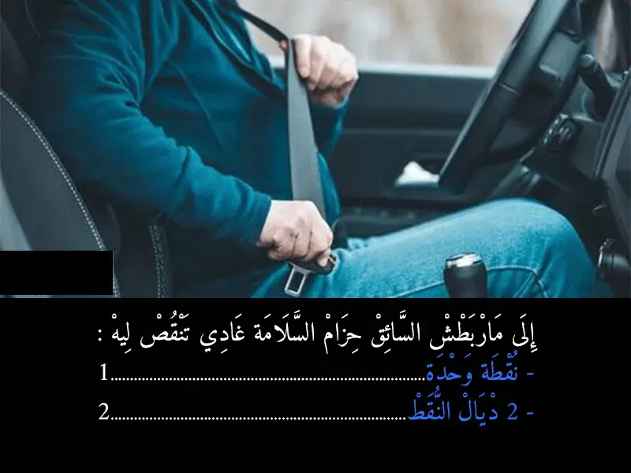
بيّن الجواب
الجواب الصحيح: 1
استعمال حزام السلامة من قبل السائق و الراكب بالمقعد الأمامي إجباريا، داخل التجمعات العمرانية، و المقاعد الخلفية يصبح إجباريا خارج التجمعات العمرانية. يمنع استعمال حزام السلامة دون ربطه جيدا أو وضع حزام الكتف تحت الذراع أو وراء الرأس عوض وضعه على مستوى الصدر. عدم إحترام إجبارية حزام السلامة تعتبر مخالفة من الدرجة الثانية ويتم تغريم المخالف بمبلغ 500 إلى 1000 درهم، ويتم خصم تقطة واحدة (1 نقطة) من رصيد رخصة السياقة. الإجابة الصحيح هي رقم 1.
السؤال 3
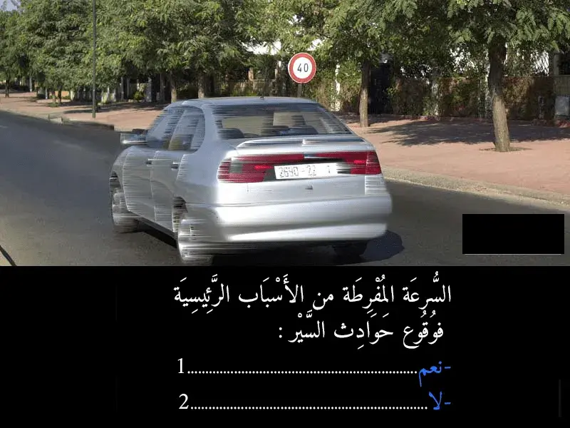
بيّن الجواب
الجواب الصحيح: 1
السرعة المفرطة هي واحد من الأسباب الرئيسية اللي كيتسببوا فحوادث السير. لما كيسوق السائق بسرعة كبيرة، كيولي عندو صعوبة فالتوقف أو تفادي العوائق اللي كيواجهها فالطريق. بالإضافة لهاد الشي، السرعة المفرطة كتقلل من قدرة السائق على التحكم فالسيارة، وكترفع من خطورة الاصطدامات وتأثيراتها، سواء على السائق أو على الركاب أو حتى على المشاة. يعني، احترام السرعة المحددة كيساهم بزاف فالحفاظ على السلامة ديال الجميع فالطريق. الجواب الصحيح هو رقم 1.
السؤال 4
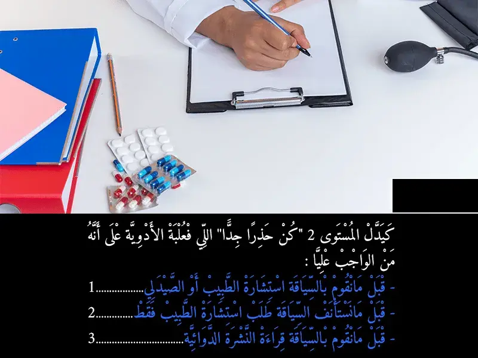
بيّن الجواب
الجواب الصحيح: 1
المستوى الثاني (2) (كن حذرا جدا) الذي يوجد في علبة الأدوية فهو يعني على أنه يجب عليّ قبل القيام بالسياقة، يجب علي إستشارة الطّبيب أو الصيدلي. الجواب الصحيح هو رقم 1.
السؤال 5
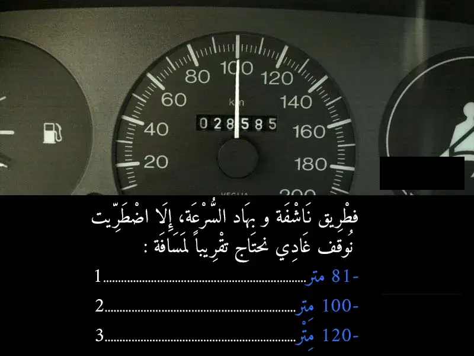
بيّن الجواب
الجواب الصحيح: 2
أسير بسرعة 100 كلم في الساعة في طريق ناشفة (أي عادية)، لحساب مسافة الوقوف في هذه الحالة فنقوم بحذف العدد الفردي وضرب ما تبقى من عدد في نفسه، في هذه الحالة سوف نقوم بحذف العدد الفردي والذي هو 0 ويتبقى لنا العدد 10. إذن نضرب العدد 10 في 10 والنتيجة هي 100. إذن نحتاج إلى مسافة 100 متر للوقوف إذا كنت أسير بسرعة 100 كلم في الساعة. الجواب الصحيح هو رقم 2.
السؤال 6
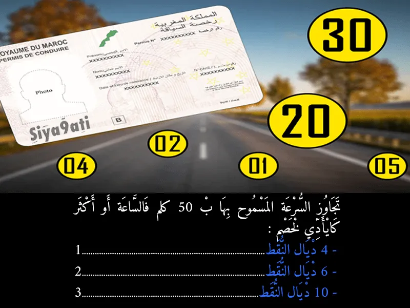
بيّن الجواب
الجواب الصحيح: 2
تجاوز السرعة القصوى المسموح بها بما يعادل أو يفوق 50 كلم في الساعة تعتبر جنحة وليست مخالفة، يعاقب بغرامة من 4000 إلى 8.000 درهم وبتوقيف رخصة السياقة لمدة تتراوح ما بين شهر واحد وثلاثة أشهر. ويتم خصم 6 نقاط من رصيد رخصة السياقة. الجواب الصحيح هو رقم 2.
السؤال 7
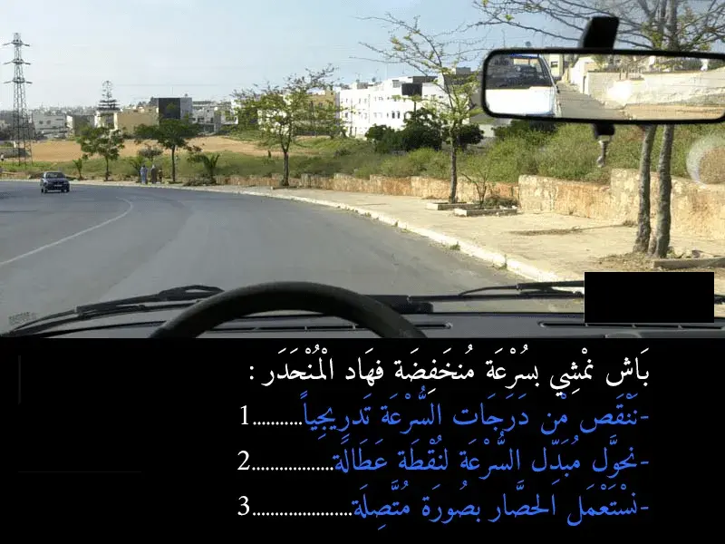
بيّن الجواب
الجواب الصحيح: 1
العربة تحتوي على 3 أنواع من الفرامل، توجد فرامل اليد، وتوجد الفرامل الرئيسية التي نستعمل فيها الأرجل، وثالثا فرامل المحرّك (علبة محول السرعات). الان في هذه الحالة لكي أسير بسرعة مخفضة في هذا المنحدر لا نستخدم فرامل اليد أثناء السير لأنه لا ينقص من السرعة ونستخدمه عندما تتعطّل الفرامل الرئيسية، ولا نستعمل الفرامل بصورة متّصلة بل نقوم بالإنقاص من درجات السرعة تدريجيا (درجات السرعة تعني مستويات السرعة) أي إذا كنت أسير بالمستوى الخامس أقوم بخفص مستوى السرعة إلى المستوى الرابع والثالث والثاني كحد أقصى (المستوى الأول لا يعتبر من الفرامل فهو خاص بعملية الإقلاع فقط). إذن الجواب الصحيح هو رقم 1.
السؤال 8
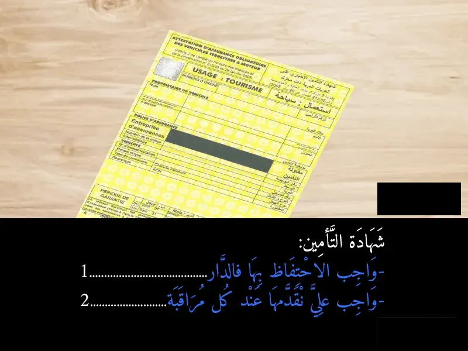
بيّن الجواب
الجواب الصحيح: 2
جميع أوراق السيّارة لا يمكن تركها في المنزل، يجب على السائق حملها معه في السيّارة وتقديمها عندما تكون هنالك مراقبة طرقية بما في ذلك شهادة التامين (لاصورانص). الجواب الصحيح هو رقم 2.
السؤال 9
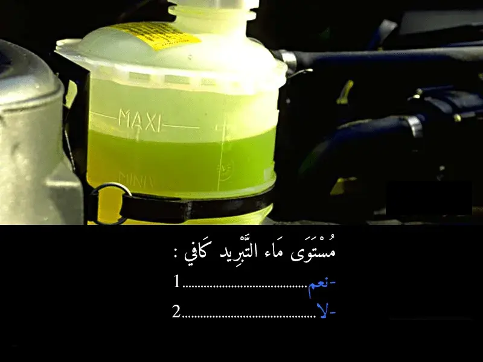
بيّن الجواب
الجواب الصحيح: 1
ليس من الضروري أن يكون مستوى ماء التّبريد في مستوى MAXI لكي نقول عنه أنه كافِِ، فأيضا لو كان متسوى ماء التّبريد بين مستوى MAXI و MINI فإن هذا المستوى كافِِ. (فقط لا يجب أن يكون مستوى ماء التّبريد أقل من MINI، لأنه سوف يكون غير كافِِ في هذه الحالة. الجواب الصحيح هو رقم 1.
السؤال 10
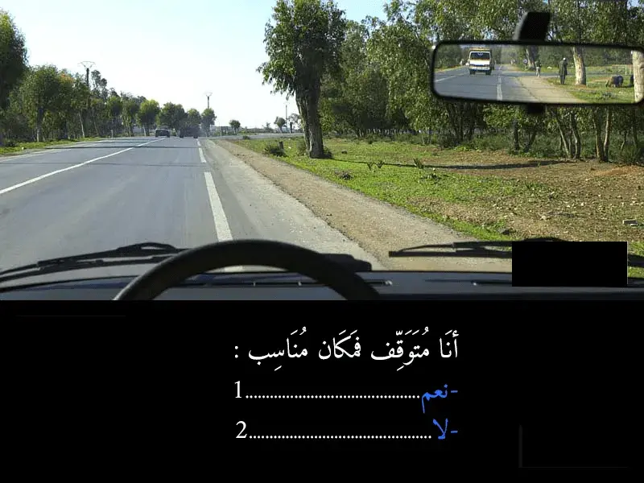
بيّن الجواب
الجواب الصحيح: 2
عندما أريد التوقّف فيجب عليّ التوقّف خارج الطّريق بالكامل أي في قارعة الطّريق وليس جزء من السيارة خارج الطّريق والجزء الاخر في الطّريق (لا أتوقّف في الطّريق التي تسير فيها العربات) وكما نلاحظ في الصورة فالسيّارة نصفها متوقّف في الطّريق والنصف الاخر خارج الطّريق. لذلك أنا لست متوقّف في المكان المناسب. يجب ان تكون السيارة بكاملها خارج الطّريق. الجواب الصحيح هو رقم 2.
السؤال 11
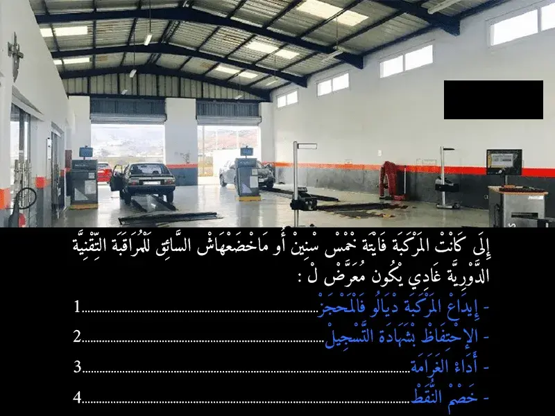
بيّن الجواب
الجواب الصحيح: 2 و 3 و 4
كما نعلم بعد مرور 5 سنوات على العربة فإنها تصبح ملزمة بالفحص التقني كل عام (لافيزيت)، إذا لم يقم السائق بعمل مراقبة تقنية دورية (لافيزيت) لعربته فإن عون محرر المحضر (الشرطي مثلا) سوف يقوم بالاحتفاظ بشهادة التسجيل أو سند الملكية، وسيعطيك وصل الاحتفاظ بشهادة التسجيل الذي يعتبر إذنًا للقيادة صالحًا لمدة 7 أيام، وهو فترة كافية لإجراء الفحص التقني. بعد ذلك، يجب على السائق إجراء الفحص التقني والعودة إلى عون محرر المحضر مع نسخة من الفحص التقني الجديد. سيقوم العون بمقارنة النسخة مع نتيجة الفحص التقني الجديدة، وإذا كانت النتيجة إيجابية (FAVORABLE)، سيعيد إليك شهادة التسجيل الخاصة بك. كما أنه السائق سوف يتعرض لمخالفة من الدرجة الأولى وغرامة قدرها 400 درهم إذا قمت بدفعها في غضون 24 ساعة. وإذا تأخرت، تصبح الغرامة 500 درهم في غضون أسبوعين، أو 700 درهم إذا دفعت في غضون شهر. كما انه سياقة عربة تجاوزت 5 سنوات في عُمُرِها دون التّوفر على شهادة الفحص التقني فهذه تعتبر مخالفة من الدرجة الأولى، ويتعرض السائق إلى خصم 3 نقاط من رصيد رخصة السياقة الخاصة به. الجواب الصحيح هو رقم 2، 3 و 4.
السؤال 12
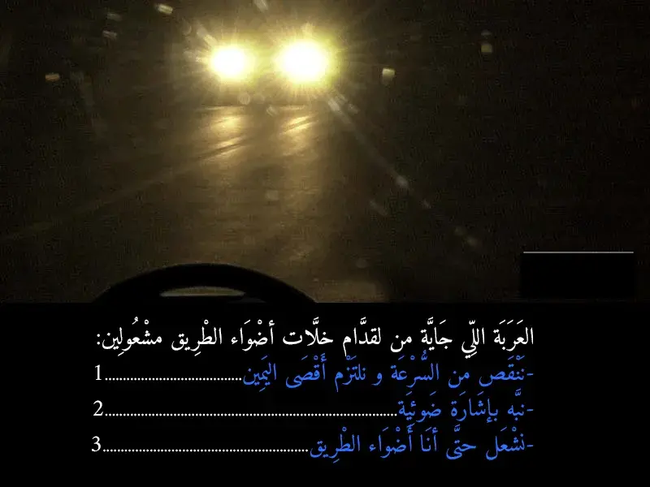
بيّن الجواب
الجواب الصحيح: 1 و 2
العربة التي أتقابل معها تركت أضواء الطّريق مشتغلة، في هذه الحالة ولكي يكون التّقابل بيني وبين العربة اَمن، فيجب عليّ الإنقاص من السّرعة والتزام أقصى اليمين وكذلك التّنبيه بإشارة ضوئية لكي أُنبّه سائق العربة لكي يقوم بتغيير أضواء الطّريق إلى أضواء التّقابل بما أنه يتقابل معي. (لا يمكنني استعمال أضواء الطّريق ايضا لأنه ممنوع، بما أنني أتقابل مع هذه العربة). الجواب الصحيح هو رقم 1 و 2.
السؤال 13
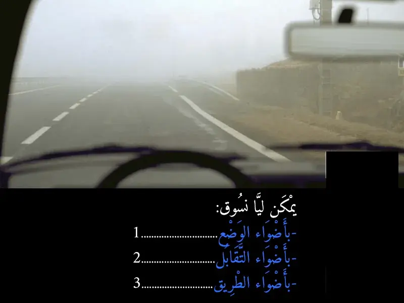
بيّن الجواب
الجواب الصحيح: 1 و 2
كما نلاحظ في هذه الحالة فيوجد ضباب، عند وجود ضباب فنقوم بإستعمال أضواء الضباب الخلفية والأمامية وأضواء التقابل، بالاضافة لإمكانية إستعمال أضواء الوضع مع أضواء التقابل او الضبابة، وبما انه لا يوجد أضواء الضبابة ضمن الإختيارات التي في السؤال فنقوم بإختيار أضواء التقابل وأضواء الوضع. أضواء الطريق (الضوء العالي) كتعكس الضباب وكترجع الضوء لعينيك، الشي اللي كينقص من الرؤية.
⚠️ ملاحظة: يمكن استعمال أضواء الوضع في آن واحد مع أضواء الطريق وأضواء التقابل والأضواء الخاصة بالضباب، ويمكن كذلك استعمالها وحدها عند وقوف المركبة أو توقفها أو عندما تكون ظروف الإنارة على الطرق، ماعدا الطريق السيار أو الطرق ذات المسالك الخاصة. الجواب الصحيح هو رقم 1 و 2.
السؤال 14
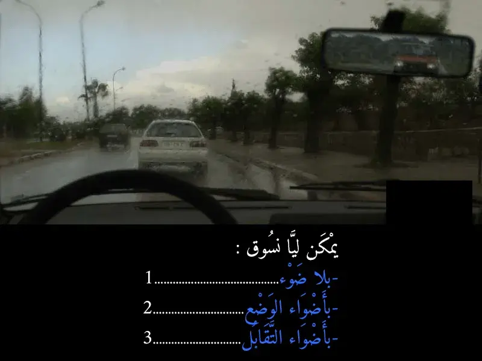
بيّن الجواب
الجواب الصحيح: 2 و 3
أثناء هطول الأمطار، نقوم بالسّير بإستعمال أضواء التّقابل وأضواء الضباب الأمامية، بالاضافة لإمكانية إستعمال أضواء الوضع مع أضواء التقابل او الضبابة، وبما انه لا يوجد أضواء الضبابة الأمامية ضمن الإختيارات التي في السؤال فنقوم بإختيار أضواء التقابل وأضواء الوضع.
⚠️ ملاحظة: يمكن استعمال أضواء الوضع في آن واحد مع أضواء الطريق وأضواء التقابل والأضواء الخاصة بالضباب، ويمكن كذلك استعمالها وحدها عند وقوف المركبة أو توقفها أو عندما تكون ظروف الإنارة على الطرق، ماعدا الطريق السيار أو الطرق ذات المسالك الخاصة. الجواب الصحيح هو رقم 2 و 3.
السؤال 15
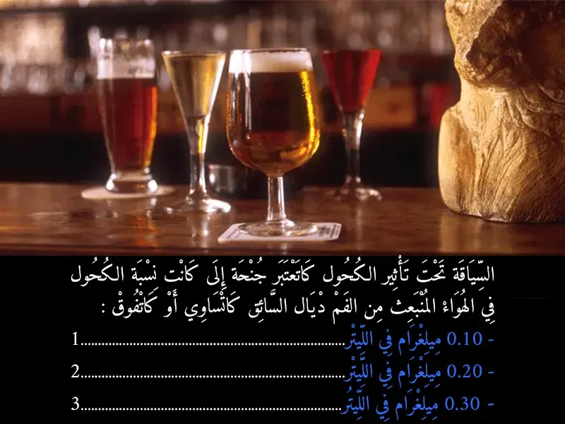
بيّن الجواب
الجواب الصحيح: 1
حدد القرار المشترك بين وزير التجهيز و النقل و وزير الصحة رقم 2707.10 المنشورة بالجريدة الرسمية عدد 5878 بتاريخ 30/09/2010 نسبة 0.10 ملم/ اللتر في الهواء المنبعث من الفم، و 0.20 غرام في اللتر في دمه. كما حددت المادة 183 من مدونة السير عقوبة جنحة السياقة تحت تأثير الكحول في الحبس من 6 أشهر إلى سنة و بغرامة من 5000 درهم إلى 10.000 درهم، أو بإحدى العقوبتين فقط، وتأمر المحكمة المختصة لزوما بإجراء إضافي بموجبه توقف الإدارة رخصة السياقة الخاصة بالمعني بالأمر لمدة تتراوح بين 6 أشهر و سنة واحدة. و في حالة العود إلى ارتكاب المخالفة داخل 5 سنوات التالية لصدور مقرر قضائي مكتسب لقوة الشيء المقضى به من أجل مخالفات مماثلة، ترفع العقوبات إلى الضعف، وتسري نفس الأحكام في حق معلم السياقة في حال تم ضبط متدرب السياقة مرتكبا لهذا الفعل.. بفعل خطورة الفعل المرتكب من طرف السائق، و المتمثل في سياقة عربته تحت تأثير الكحول، فإن المشرع لم يكتف بتطبيق العقوبة السالبة للحرية و الغرامة المالية، و إنما عزز هذه الإجراءات بخصم ستة نقط (6 نقاط) من الرصيد المخصص لرخصة السياقة الخاصة بالمعني بالأمر طبقا لما هو منصوص عليه في المادة 99 من مدونة السير، هادفا إلى مضاعفة التدابير الاحترازية لثني السائقين على إتيان هذا السلوك الخطير. الجواب الصحيح هو رقم 1.
السؤال 16
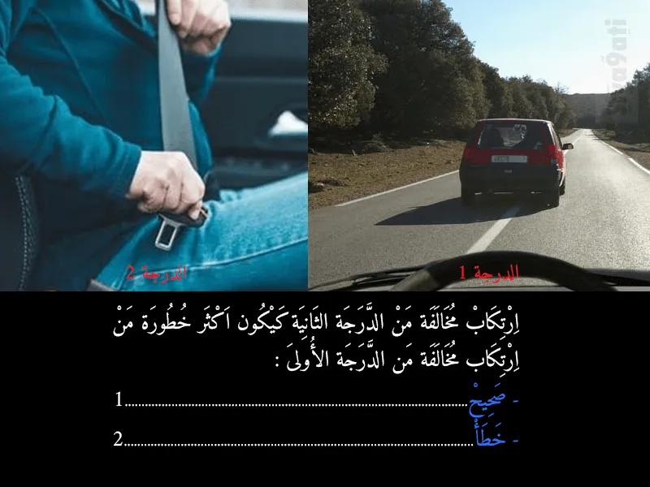
بيّن الجواب
الجواب الصحيح: 2
ارتكاب مخالفة من الدرجة الثانية ما كيكونش أكثر خطورة من ارتكاب مخالفة من الدرجة الأولى. بالعكس، مخالفات الدرجة الأولى كتعبر على المخالفات الأكثر خطورة والأكثر تأثير على السلامة ديال السائقين والمشاة، وكيتفرض عليها عقوبات أشد. مثلاً، عدم إحترام علامة قف فهي مخالفة من الدرجة الأولى حيث كيعرض السائق والمستعملين للطريق لخطر كبير، وكيكون عندها غرامة كبيرة وخصم نقاط من رخصة السياقة. أما مخالفات الدرجة الثانية، فرغم أنها مهمة، ما كتوصلش لنفس مستوى الخطورة ديال مخالفات الدرجة الأولى، والعقوبات ديالها كيكونوا أخف. الجواب الصحيح هو رقم 2.
السؤال 17
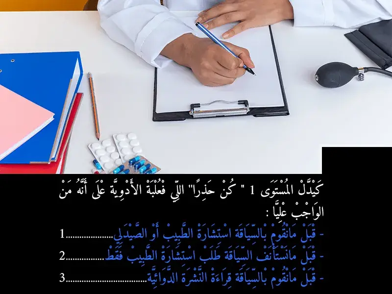
بيّن الجواب
الجواب الصحيح: 3
المستوى الأول (1) (كن حذرا) الذي يوجد في علبة الأدوية فهو يعني على أنه يجب عليّ قبل القيام بالسياقة، يجب علي قراءة النّشرة الدوائية. (النشرة الدوائية تعني الاطلاع على الوثيقة اللي كتجي مرفوقة مع الدواء، واللي كتحتوي على مجموعة من المعلومات المهمة حول الدواء وكيفية استخدامه بشكل صحيح وآمن.) الجواب الصحيح هو رقم 3.
السؤال 18
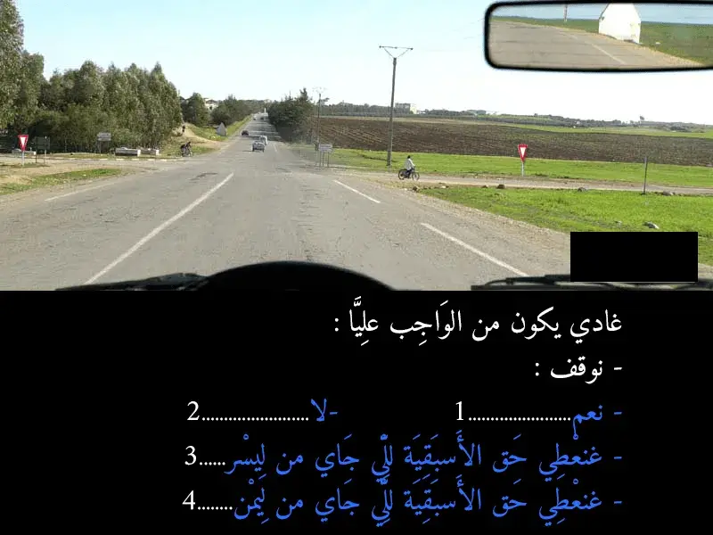
بيّن الجواب
الجواب الصحيح: 2
كما نلاحظ فالطّريق على اليمين وعلى اليسار في ملتقى الطّرق لديهم علامة طرقية تعني أنه ليس لديهم حق الأسبقية إذن الأسبقية لي في ملتقى الطّرق القادم أي أنني في طريق ذات أولوية. إذن في هذه الحالة ليس من الواجب عليّ الوقوف ولا أقوم بإعطاء حق الأسبقية للسيارات القادمة من اليمين وكذلك من اليسار. الجواب الصحيح هو رقم 2.
السؤال 19
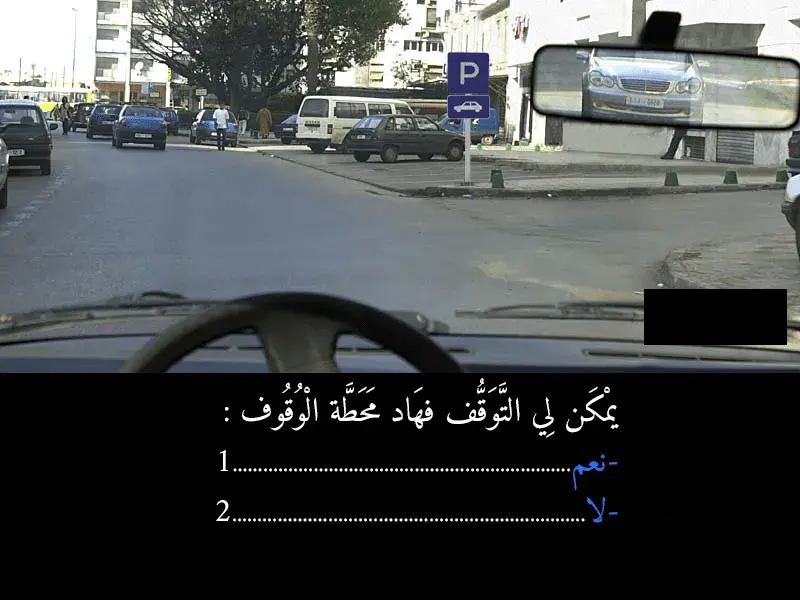
بيّن الجواب
الجواب الصحيح: 1
نعم يمكنني التوقّف في هذه المحطة الخاصة بالوقوف، لأن العلامة الطّرقية P والتي تعني Parking اي موقف، تحتوي على علامة تكميلية سيارة وهي تعني أن هذا المكان فهو محطة وقوف خاصة بالسّيارات. إذن يمكنني التوقّف في هذه المحطة للوقوف. الجواب الصحيح هو رقم 1.
السؤال 20
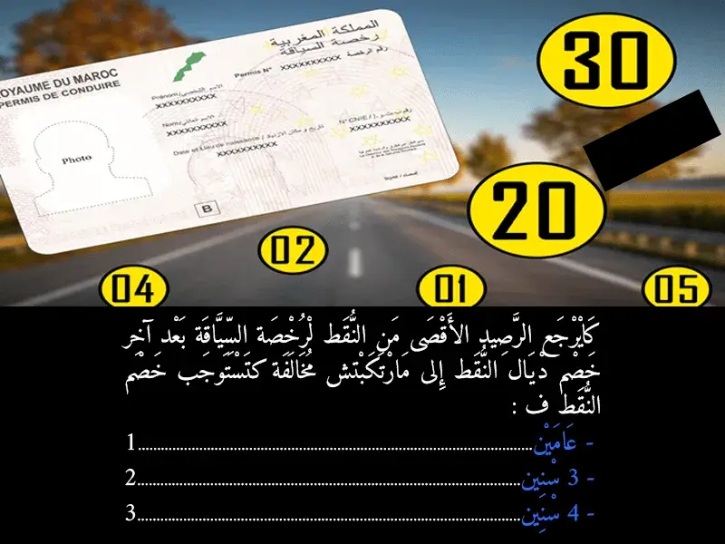
بيّن الجواب
الجواب الصحيح: 2
كما نعلم فإن رخصة السياقة تتوفر على رصيد عشرين (20) نقطة خلال الفترة الاختبارية و المحددة في سنتين (2) تبتدئ من تاريخ تسليمها و ثلاثين نقطة (30) عندما تصبح هذه الرخصة نهائية. بالنسبة لهذه الحالة في السؤال فإنه يسترجع السائق مجموع الرصيد (30 نقطة) إذا لم يرتكب السائق مخالفة معاقب عليها بخصم النقط خلال مدة ثلاث سنوات. كما أنه يوجد حالات أخرى لإسترجاع رصيد نقط رخصة السياقة سوف نراها في أسئلة أخرى إن شاء الله. الجواب الصحيح لهذه الحالة هو رقم 2.
السؤال 21
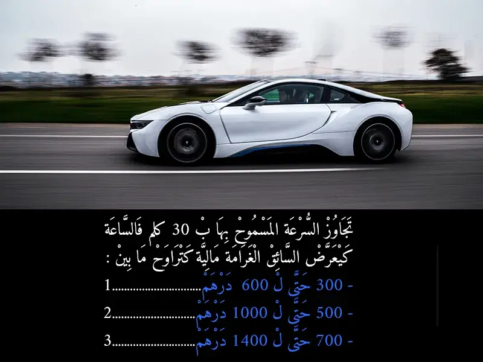
بيّن الجواب
الجواب الصحيح: 3
تجاوز السرعة القصوى المسموح بها بثلاثين (30) إلى أقل من خمسين (50) كيلومترا في الساعة، وتعتبر مخالفة من الدرجة الأولى ويعاقب مرتكبها بغرامة من سبعمائة (700) إلى ألف وأربعمائة (1.400) درهم، بالإضافة إلى خصم 4 نقاط من رصيد رخصة السياقة. الجواب الصحيح هو رقم 3.
السؤال 22
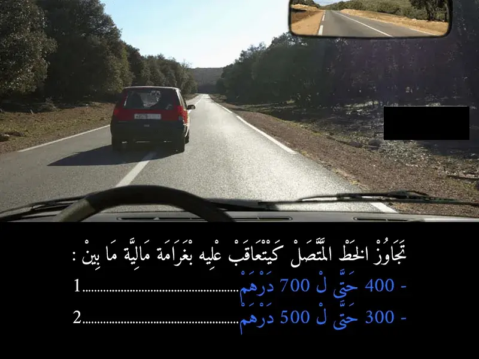
بيّن الجواب
الجواب الصحيح: 1
تجاوز الخط المتّصل يعتبر من مخالفة من الدّرجة الاولى ويعاقب عليه القانون بغرامة مالية من 400 إلى 700 درهم، ولا يتم خصم نقاط من رصيد رخصة السياقة بسبب تجاوز الخط المتّصل، بل يعاقب المخالف بغرامة مالية فقط. الجواب الصحيح هو رقم 1.
السؤال 23
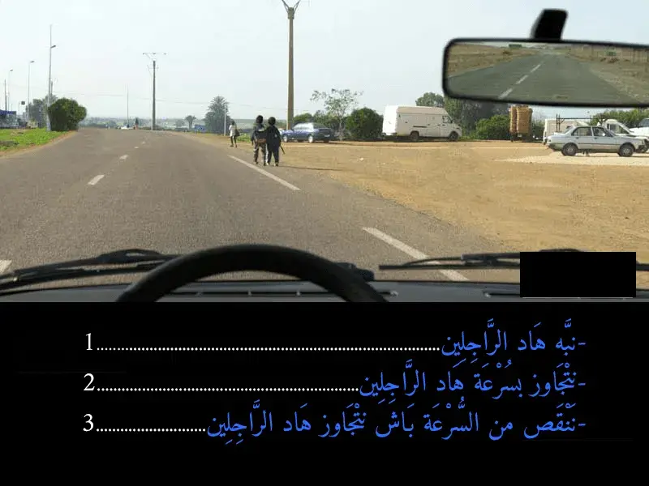
بيّن الجواب
الجواب الصحيح: 3
التّّنبيه بإشارة ضوئية فهو بدون فائدة لأن الرّاجلين لن يشاهدوا التّنبيه الضوئي، بالنسبة للتّنبيه بالمنبّه الصوتي فلا يمكن التّنبيه به لأنه ممنوع على الرّاجلين، بما أن الراجلين يشكلون خطر لأنهم يسيرون قرب الطّريق إذن هذا الأمر يشكّل خطر، وفي حالات الخطر دائما أقوم ابإنتباه و أقوم بالإنقاص من السّرعة لتجاوز الراجلين وليس الزّيادة في السّرعة. إذن في هذه الحالة أنقص من السّرعة لكي أقوم بتجاوز هؤلاء الرّاجلين. الجواب الصحيح هو رقم 3.
السؤال 24
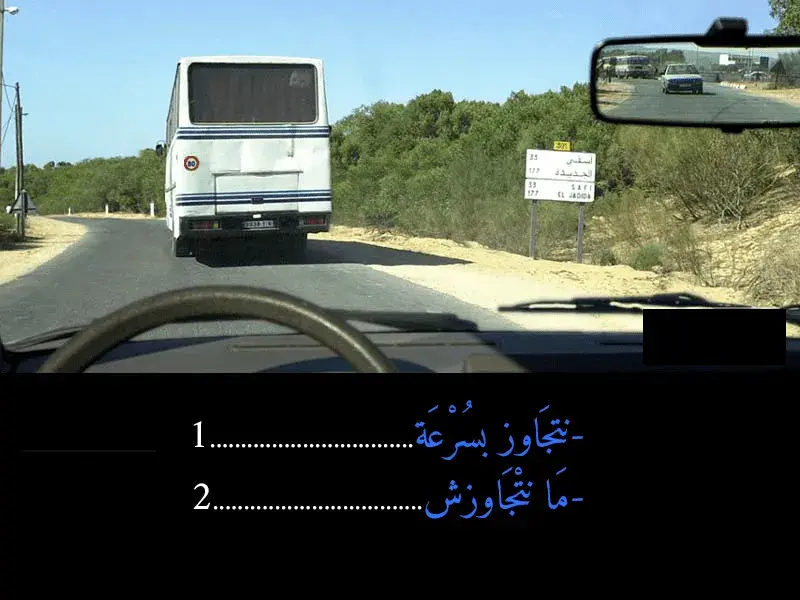
بيّن الجواب
الجواب الصحيح: 2
في هذه الحالة كما نرى فإننا نتواجد قرب منعرج على اليسار والرؤية غير واضحة، دائما في طريق ذات إتّجاهين لا نقوم بعملية التجاوز عند وجود منعرج. لذلك يجب الإنتظار والسير خلف الحافلة حتى تتوفر شروط التّجاوز ولا أتجاوز بسرعة. الجواب الصحيح هو رقم 2.
السؤال 25
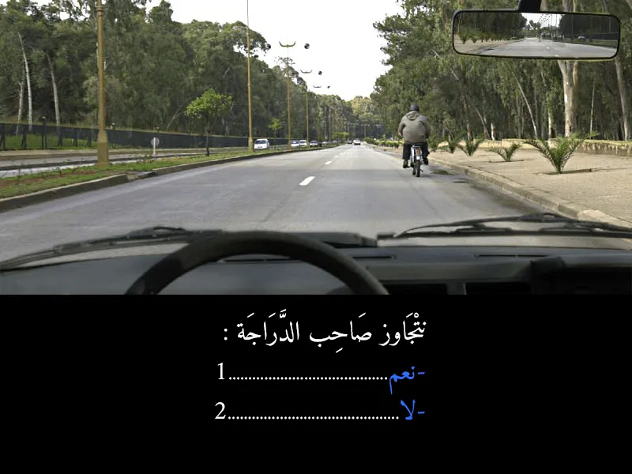
بيّن الجواب
الجواب الصحيح: 1
كما توضّح الصورة فالطّريق ذات إتّجاه واحد يعني يوجد مسلكين للسّير، المسلك الأول الذي أتواجد فيه الان وهو خاص بالسّير العادي والمسلك الثاني على اليسار فهو خاص بالتّجاوز، بما أنه لا توجد عربة تقوم بعملية التّجاوز من الخلف إذن يمكنني التّجاوز. إذن في هذه الحالة يمكنني تجاوز صاحب الدراجة. الجواب الصحيح هو رقم 1.
السؤال 26
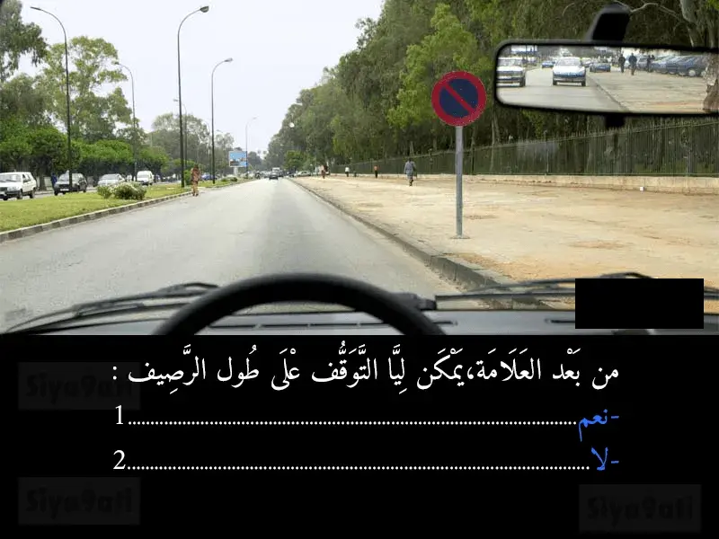
بيّن الجواب
الجواب الصحيح: 2
بعد العلامة لا يمكنني التوقّف، العلامة الطّرقية تمنع التوقّف على طول الرّصيف إبتداءا من العلامة حتى ملتقى الطّرق القادم. الجواب الصحيح هو رقم 2.
السؤال 27
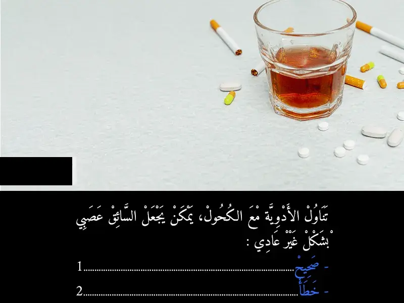
بيّن الجواب
الجواب الصحيح: 1
تناول الأدوية مع الكحول يمكن يجعل السائق عصبي بشكل غير عادي. السبب هو أن الكحول وبعض الأدوية كيقدروا يتفاعلوا مع بعضياتهم ويأثروا على الدماغ والجهاز العصبي ديال السائق. هاد التفاعل كيقدر يزيد من الآثار الجانبية ديال الأدوية أو الكحول، بحال العصبية، التوتر، والارتباك. هاد الشي كيأثر على القدرة ديال السائق على التركيز والتحكم في السيارة، وكيزيد من خطر الحوادث. لهذا، من الضروري تجنب شرب الكحول، واتباع التعليمات ديال الطبيب أو الصيدلي. الجواب الصحيح هو رقم 1.
السؤال 28
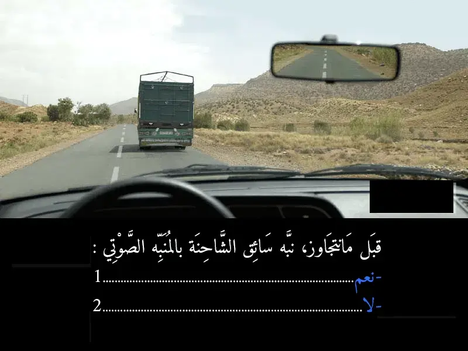
بيّن الجواب
الجواب الصحيح: 1
دائما قبل التّجاوز أقوم بتنبيه العربة التي أمامي بالمنبّه الصوتي أو بإشارة ضوئية (على حسب الحالة)، في هذه الحالة نتواجد في الفترة الصباحية وخارج التّجمعات العمرانية، إذن المنبّه الصوتي مسموح به لكي أقوم بتنبيه سائق الشاحنة قبل التّجاوز. الجواب الصحيح هو رقم 1.
السؤال 29
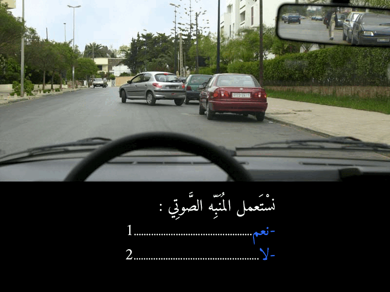
بيّن الجواب
الجواب الصحيح: 2
كما نلاحظ فالسيارة الرمادية ترجع للخلف لعملية التوقّف، داخل التجمّع السكني فاستعمال المنبّه الصّوتي فهو ممنوع إلاّ في حالة وجود خطر أو للضرورة. في هذه الحالة لا يوجد خطر والسيّارة فقط تستعد لعملية التوقّف إذن لا أستعمل المنبّه الصّوتي. الجواب الصحيح هو رقم 2.
السؤال 30
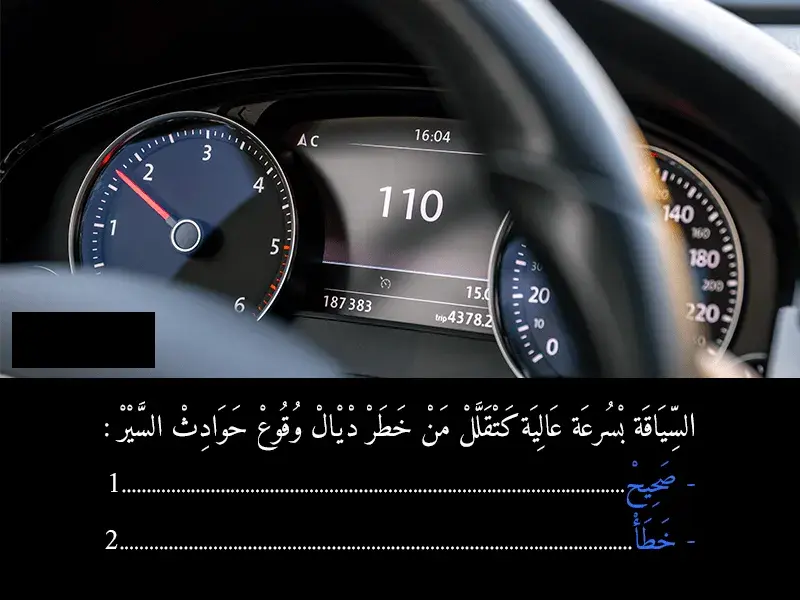
بيّن الجواب
الجواب الصحيح: 2
السياقة بسرعة عالية ما كتنقصش من خطر وقوع حوادث السير، بالعكس، كتزيد من هاد الخطر. كلما زادت السرعة، كلما كان السائق عنده وقت أقل للتفاعل مع المفاجآت اللي ممكن يلقاها فالطريق، مثل المشاة، السيارات الأخرى، الأحوال الجوية الصعبة أو حفر أو مطبات. زيادة على ذلك، التوقف المفاجئ كيكون أصعب وخطر الاصطدام كيكون أكبر. السياقة بسرعة كبيرة كتزيد من خطورة الحادث إذا وقع، حيث كيزيد التأثير والصدمات، وهذا كيأدي لإصابات وجروح أخطر. لذلك، من المهم احترام حدود السرعة المحددة للحفاظ على السلامة ديالك وسلامة الآخرين فالطريق. الجواب الصحيح هو رقم 2.
السؤال 31
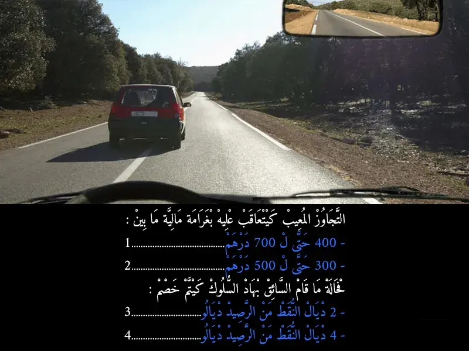
بيّن الجواب
الجواب الصحيح: 1 و 4
سوف نشرح أولا ما هو التّّّجاوز المعيب، هو نوع من أنواع التجاوز اللي كيكون خطير وغير قانوني، مثلا التجاوز مع وجود إشارات منع التجاوز، أو مثلا التجاوز مع عدم إستعمال الإشارات الضوئية، أو مثلا التجاوز والرؤية غير واضحة (المنعرجات) إلخ... التجاوز المعيب يعاقب عليه القانون بغرامة مالية قدرها 400 في حالة أدائها خلال اجل 24 ساعة او 500 درهم خلال اجل 15 يوم او 700 درهم خلال أجل 30 يوم. ويتم أيضا خصم 4 نقاط من رصيد رخصة السياقة. الجواب الصحيح هو رقم 1 و 4.
السؤال 32
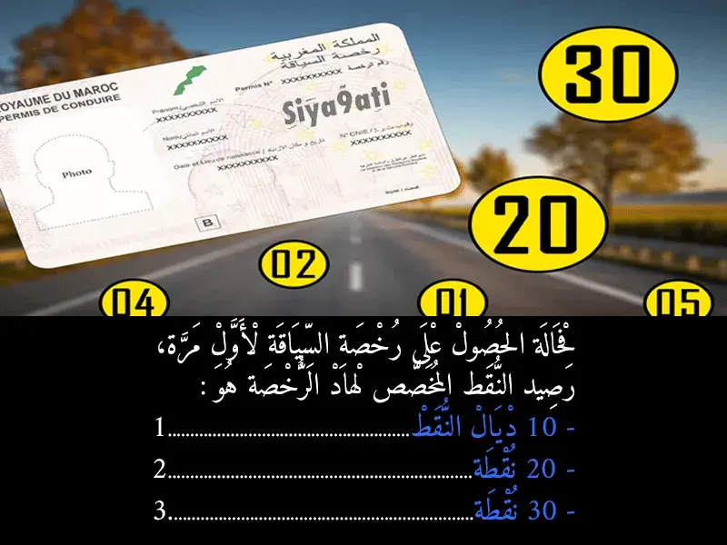
بيّن الجواب
الجواب الصحيح: 2
فحالة الحصول على رخصة السياقة لأول مرة، رصيد النقط المخصص لهذ الرخصة هو 20 نقطة. هاد الرصيد كيكون خلال فترة اختبارية اللي كتمتد لمدة سنتين. خلال هاد الفترة، خصك تحافظ على النقاط ديالك وما ترتكبش مخالفات مرورية اللي يمكن تأدي لخصم النقاط. إذا دازو هاد السنتين بدون مشاكل وبدون فقدان النقاط، غادي يزيد رصيدك ويولي عندك 30 نقطة. الجواب الصحيح هو رقم 2.
السؤال 33
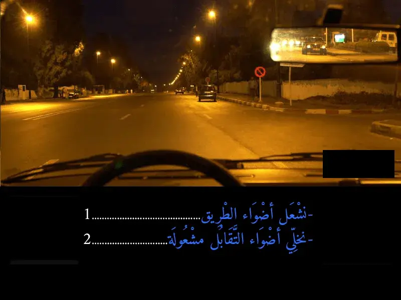
بيّن الجواب
الجواب الصحيح: 2
أضواء الطّريق داخل التّجمعات العمرانية فهو ممنوع إستعمالها، في هذه الحالة وبما أنني أتواجد داخل التّجمعات العمرانية فأقوم بإستعمال أضواء التّقابل. الجواب الصحيح هو رقم 2.
السؤال 34
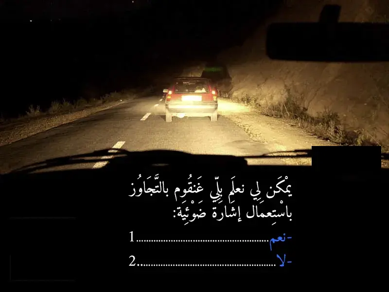
بيّن الجواب
الجواب الصحيح: 1
لكي أقوم بالتّجاوز فدائما أقوم بالتّنبيه، في هذه الحالة يمكنني إستعمال إشارة ضوئية لتنبيه السيّارة التي أمامي على أنني سوف أقوم بتجاوزها. الجواب الصحيح هو رقم 1.
السؤال 35
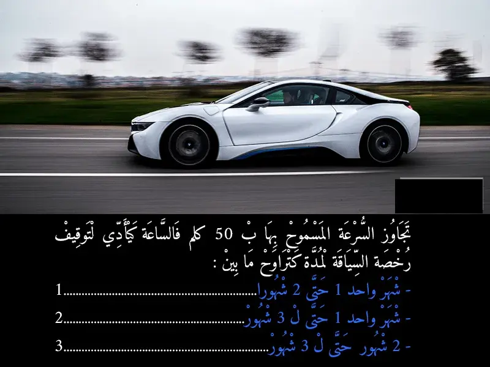
بيّن الجواب
الجواب الصحيح: 2
تجاوز السرعة القصوى المسموح بها بما يعادل أو يفوق 50 كلم في الساعة تعتبر جنحة وليست مخالفة، يعاقب بغرامة من 4000 إلى 8.000 درهم وبتوقيف رخصة السياقة لمدة تتراوح ما بين شهر واحد و 3 أشهر. ويتم خصم 6 نقاط من رصيد رخصة السياقة. الجواب الصحيح هو رقم 2.
السؤال 36
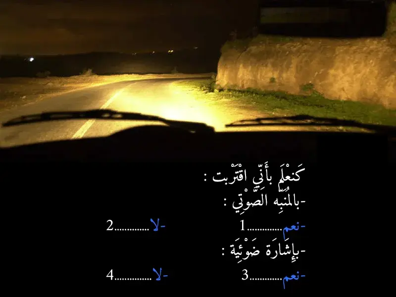
بيّن الجواب
الجواب الصحيح: 2 و 3
المنبه الصوتي ممنوع في الفترة الليلية، يمكنني أن أعلم أنني إقتربت من المنعرج عن طريق التنبيه بإشارة ضوئية، كما أن الإشارة الضوئية في الفترة اللّيلية فهي أكثر فعالية. الجواب الصحيح هو رقم 2 و 3.
السؤال 37
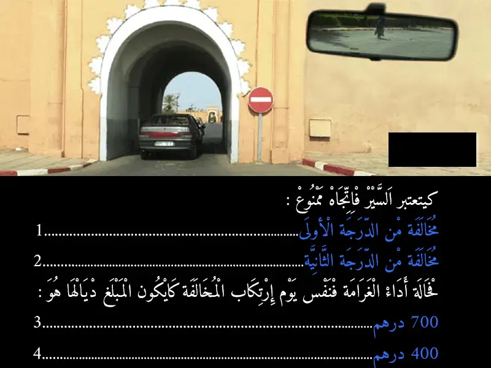
بيّن الجواب
الجواب الصحيح: 1 و 4
السير في الاتجاه الممنوع يعتبر مخالفة من الدرجة الأولى، ويعاقب عليها القانون بغرامة قدرها 400 درهم إذا دفعها المخالف في غضون 24 ساعة، أو 500 درهم إذا دفعها خلال 15 يومًا، أو 700 درهم إذا دفعها خلال 30 يومًا. بالإضافة إلى ذلك، يتم سحب 4 نقاط من رصيد رخصة السياقة. الجواب الصحيح هو رقم 1 و 4.
السؤال 38
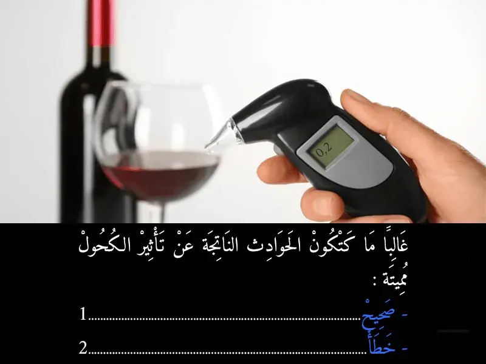
بيّن الجواب
الجواب الصحيح: 1
الحوادث الناتجة عن تأثير الكحول غالباً ما تكون مميتة لأن الكحول يؤثر على ردود الفعل والتركيز وقدرة السائق على التحكم في السيارة، مما يزيد من خطورة الاصطدامات، كما أن الكحول يقلل من القدرة على تقدير المسافات والسرعة، ويجعل السائق أكثر عرضة لاتخاذ قرارات خاطئة. الجواب الصحيح هو رقم 1.
السؤال 39
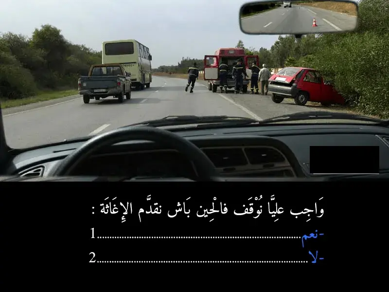
بيّن الجواب
الجواب الصحيح: 2
عندما أتواجد قرب حادثة طرقية وتكون سيارة الإسعاف موجودة، فلا يوجد سبب لكي أقف، سيارة الإسعاف سوف تتكلّف بالأمر. (أقوم بالوقوف عندما أكون أول واحد تواجد في الحادثة فقط، ولا أقف عندما أجد سيارة الإسعاف موجودة مسبقا). الجواب الصحيح هو رقم 2.
السؤال 40
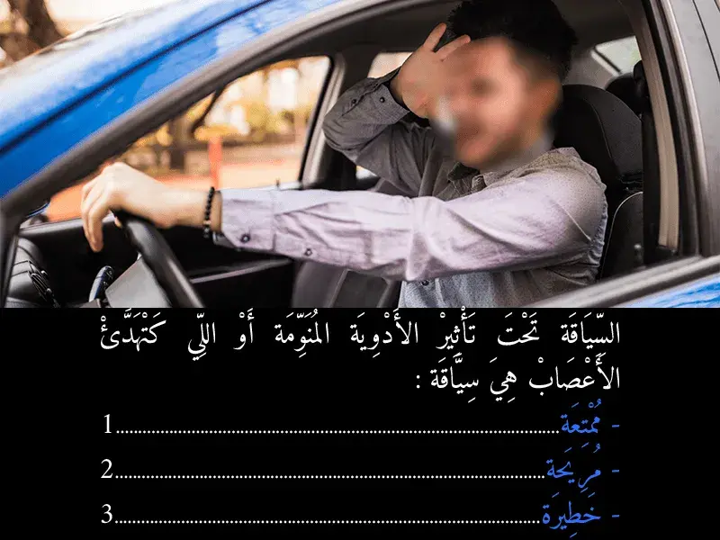
بيّن الجواب
الجواب الصحيح: 3
السياقة تحت تأثير الأدوية المنومة أو المهدئة للأعصاب تعتبر سياقة خطيرة. هذه الأدوية تقلل من قدرة السائق على التركيز وتبطئ ردود فعله، مما يزيد من احتمالية وقوع الحوادث. تأثيرها يشمل الشعور بالنعاس والتباطؤ في الاستجابة للمواقف الطارئة على الطريق، مما يجعل السائق غير قادر على التعامل بفعالية مع المواقف الخطرة. لهذا السبب، من الضروري تجنب القيادة عند تناول هذه الأنواع من الأدوية لضمان سلامتك وسلامة الآخرين على الطريق. الجواب الصحيح هو رقم 3.